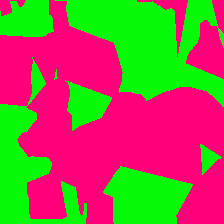
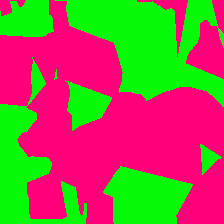

Shape Bias & Robustness Evaluation
via Cue Decomposition for Image Classification & Segmentation
Edgar Heinert • Thomas Gottwald • Annika Mütze • Matthias Rottmann
Download PDF

 

Abstract
We introduce a two‑step cue‑decomposition pipeline—Edge‑Enhancing Diffusion (EED) to isolate shape information and Voronoi‑based abstraction to capture texture—that lets us quantify how much deep nets rely on each cue. Building on this decomposition, we propose:
- a unified shape‑bias metric for both classifiers and high‑resolution semantic segmentation models;
- a robustness metric that out‑predicts prior approaches when models face corruptions from ImageNet‑C and Cityscapes‑C; and
- the first large‑scale shape‑bias study for segmentation, covering Cityscapes and ADE20k.
Method Overview
Our pipeline first applies Edge‑Enhancing Diffusion to emphasize object boundaries while removing fine‑grained textures. The resulting shape cue keeps category‑defining contours. Next, we compute a Voronoi texture abstraction on the original image, which discards shape but preserves local texture statistics. By evaluating models on shape‑only (xS) and texture‑only (xT) inputs, we can decompose the prediction confidence into distinct cues.
Figures
EED Cues


Voronoi Cues


Cue Conflict


Metrics at a Glance
Segmentation Shape‑Bias & Robustness
• DeepLab‑V3+ shows the strongest shape reliance (0.78)—
64 pp higher than transformer‑based Swin‑UNet.
• Robustness score ρ = 0.92 predicts mIoU drops on Cityscapes‑C.
• Click a column header to sort; hover for definitions.

Classification Shape-Bias & Robustness
• CNNs (e.g. ResNet-50) remain texture-leaning
(shape-bias < 0.25); ViT-B/16 reaches 0.61
after fine-tuning.
• Our robustness metric correlates with ImageNet-C drops at r = 0.88—
better than mCE.
• Toggle cue columns for per-class breakdown or export as CSV.

Qualitative Results
Compare how each model handles shape‑only, texture‑only, and original inputs. Use the buttons to switch between models; the bottom row updates live.


Resources & Links
FAQ
Why study shape‑bias for segmentation?
Most shape‑bias work focuses on image‑level classifiers. Yet safety‑critical perception stacks (e.g., autonomous driving) rely on dense predictions. Our results reveal that segmentation models often carry a texture bias similar to their classification counterparts—highlighting a blind‑spot in current robustness evaluations.
How expensive is cue‑decomposition?
Generating cues is < 0.5 s per 512² image on a modern GPU, and the evaluation re‑uses existing datasets. We also provide pre‑computed cues for major benchmarks.
Can I plug this metric into my own model?
Yes—our pip install cue‑decomposition package ships a one‑liner evaluate_shape_bias(model, dataloader).
Acknowledgments
We thank Sebastian Houben, Sina Honari, and the anonymous reviewers for valuable feedback. This work was supported by the German Federal Ministry of Education and Research (BMBF) under Grant XYZ123.

Contact
Have questions or want to collaborate? Reach out:
- Email: heinert@uni-example.de
- GitHub Issues: open a ticket ↗